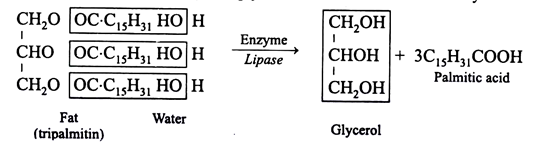
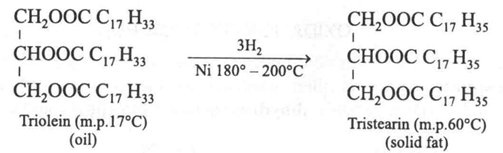

1. Fats and fatty acids are soluble in organic solvents, such as petroleum ether, benzene and chloroform. They are insoluble in water.
2. Saturated fatty acids are solid at room temperature, while unsaturated fatty acids are liquid.
3. Unsaturated fatty acids show cis-trans isomerism due to presence of double bonds.
4. They are bad conductors of heat.
5. Saturated glycerides containing fats require high temperature for melting, whereas unsaturated glycerides containing fats require relatively lower temperature for its melting.
Fats undergo hydrolysis when treated with mineral acids, the alkalies or fat splitting enzyme lipase or hydrolases to yield glycerol and the constituent fatty acids. Hydrolysis by alkalies, such as NaOH or KOH leads to the formation of sodium or potassium salts of fatty acids. The salts are known as soaps and process of its formation is saponification.
Oils containing unsaturated fatty acids can be hydrogenated in presence of high temperature, pressure and finely divided nickel. By this process the oils are converted into solid fats (glycerides of saturated fatty acids). This reaction forms the basis of the industrial production of hydrogenated oil (vegetable ghee).
Oils and fats are converted into glycerol and a long chain aliphatic alcohol when excess of hydrogen is passed through them under pressure and in presence of copper-chromium catalyst. This splitting of fat by hydrogen is called hydrogenolysis.
When unsaturated fatty acids are treated with halogens, such as iodine and chlorine, they take up iodine or other halogens at their double bond site. This process of taking of iodine is called halogenation which is an indication of unsaturation. Iodine number is the percentage of iodine absorbed by a fat.
Oils and fats on long storage in contact with heat, light, air and moisture, develop an unpleasant odour. Such oils and fats are known as rancid oils and fats. The rancidity develops due to certain chemical changes taking place in the fat.
These changes include:
1. Enzymatic hydrolysis
2. Air oxidation of unsaturated fatty acids
3. β- oxidation of saturated fatty acids.
The process of breaking of large-sized fat molecules into smaller ones is called emulsification. In animals, this process is brought about by bile juice liberated from liver. Other emulsifying agents are water, soaps, proteins and gums.